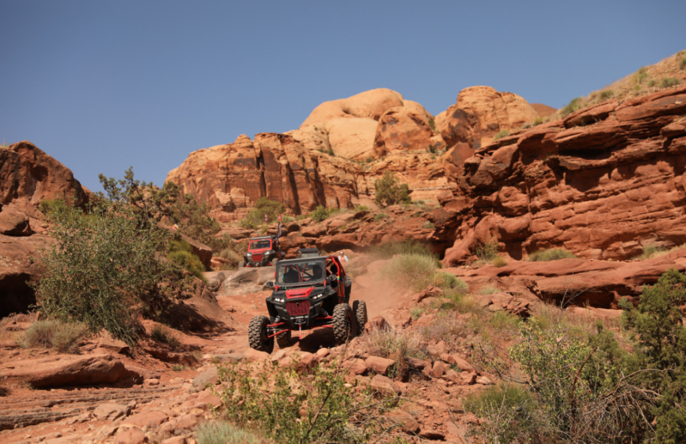

Off-Road essention
Basic Tips
- Always travel in groups of 2 or more vehicles
- Always alert someone back home where you are going and when you expect to return
- Take at least a basic supply of tools and gear
Pre-departure Maintenance Checklist
- Check engine oil & transmission oil
- Check brake fluid
- Check fan belts
- Check seat belts
- Check tire air pressure
- Grease all fittings (u-joints, steering)
- Check shocks
The Basic, Minimal Offroad Checklist
- First Aid Kit
- Basic Personal Essentials (water, food)
- Spare Tire, Full Size
- Jack and tire iron to change your tire
- Tow strap
- Basic Tool Kit